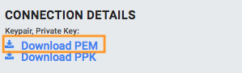
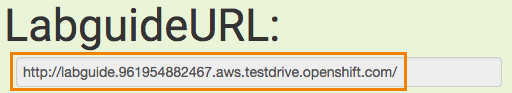

Welcome to the OpenShift Test Drive for Administrators
Please follow below instructions to get started.
1. Pre-requisites
For this lab you need to fulfill the following pre-requisites:
-
Workstation with Internet access
-
SSH client supporting authentication with a private key
2. How to start your Test Drive
To start the Test Drive press Start Lab button in the top bar.
3. Download Access Key
Immediately after pressing the start button pane labeled Connect will rollover presenting your custom SSH access key to download.

Download the PEM key to your computer if you are using regular OpenSSH on the command line Linux or macOS. Choose PPK if you are using PuTTY on Windows.
Click "Connect" button again to hide the pane.
4. Wait for lab provisioning to complete.
When you started your Test Drive the lab environment provision process initiated in the background. During provisioning you can monitor progress in the top navigation bar

In total provisioning usually takes about 5 minutes and should not exceed 10 minutes. When your lab infrastructure is ready this progress bar disappears and you will see a button to end your lab session and countdown until automatic shutdown instead:

5. How to access your personalized lab guide
This lab features a personalized lab guide which is ready as soon as the environment is provisioned. The button will appear on the right side of your screen as soon as that is the case.
To access it, click the Addl. Info button on the right.
If it is not visible wait for your lab environment to complete provisioning! An additional roll-over menu appears similar to the screen shot below.

Open the URL in a new tab to view your personalized lab guide! It will walk you through the rest of the lab show you how to access your environment.
Have fun!